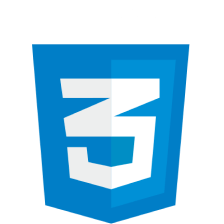
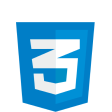

Habilidades en React:
Áreas de enfoque actual:
Actualmente, me encuentro en una fase de aprendizaje centrada en la integración de APIs en mis proyectos de React. Este proceso me ha brindado un desafío emocionante, aunque a veces confuso, a medida que exploro y comprendo cómo incorporar datos externos de manera eficaz en mis aplicaciones.
Mi enfoque:
Como iniciante en el desarrollo de aplicaciones web con React, comprendo la importancia de la práctica constante y la paciencia en mi camino de aprendizaje. Mi objetivo es seguir mejorando mis habilidades y creciendo como desarrollador, siempre con un enfoque realista y honesto en cuanto a mis capacidades y conocimientos.
Mi compromiso es ofrecer un rendimiento sólido y contribuir al éxito de cualquier proyecto en el que esté involucrado. Aprecio la transparencia y la integridad en mi trabajo, y estoy comprometido a seguir aprendiendo y creciendo en el campo del desarrollo web.
 


He adquirido un sólido conocimiento de las principales etiquetas de HTML y los fundamentos del desarrollo web. Esto me permite crear estructuras sólidas para las páginas web, incorporando elementos como títulos, párrafos, enlaces e imágenes de manera efectiva.
Indentación de código:
Mantengo un estricto estándar de indentación de código, lo que mejora la legibilidad, la organización y la facilidad de mantenimiento de mi código. Comprendo plenamente la importancia de esta práctica en el trabajo colaborativo y en la calidad del código.
Navegación entre páginas:
Tengo experiencia en la creación de sistemas de navegación entre páginas en sitios web, asegurando que los usuarios puedan acceder fácilmente al contenido que desean.
Cómo agregar títulos, párrafos, enlaces, imágenes, etc.:
Estoy versado en la inclusión de elementos esenciales en páginas web, como títulos, párrafos, enlaces e imágenes, lo que contribuye a una experiencia de usuario completa y efectiva.
Fundamentos de CSS y estilización de páginas:
Comprendo los fundamentos de CSS y cómo aplicar estilos a las páginas web. Puedo trabajar con propiedades como bordes, márgenes, espaciados y sombras para mejorar la estética y la funcionalidad de las páginas.
Sistema de colores: HEX, RGB, RGBA: Manipulo con destreza sistemas de colores como HEX, RGB y RGBA para lograr paletas de colores armoniosas que se ajusten a los objetivos de diseño.
Manipulación del DOM con JavaScript: Estoy explorando la manipulación del Document Object Model (DOM) con JavaScript y las posibilidades que ofrece para interactuar con elementos en una página web.
Operadores aritméticos: Utilizo operadores aritméticos para realizar cálculos y operaciones matemáticas en JavaScript.
Bucles, funciones y devoluciones de llamada: Soy competente en la implementación de bucles, funciones y devoluciones de llamada, lo que hace que mi código sea modular y reutilizable.